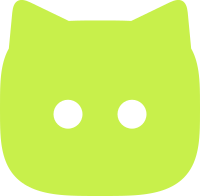
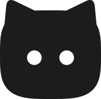

Versiones
El wordmark es el logo principal (horizontal). El símbolo va solo en el ícono de la app, favicon, avatar y espacios cuadrados. Debajo de 40 px usa el corte «small» (ojos más grandes); el wordmark ya lo lleva.

símbolo lima
símbolo tintaColor
Tinta y lima, nada más. El lima es luz: sobre fondos oscuros. Sobre blanco el lima no se lee (1,3:1) — ahí va todo en tinta.
CMYK aprox. 17 0 69 6
13:1 sobre tinta
CMYK aprox. 7 7 0 88 (en imprenta, negro enriquecido)
Texto del wordmark sobre oscuro
Acento lima legible sobre claro; no se usa en el logo
Espacio libre
Alrededor del wordmark deja al menos ½ o: la mitad de la altura de la cara de Michi (sin orejas). Alrededor del símbolo, ¼ de su ancho.
Tamaños mínimos
Wordmark: 24 px de alto en pantalla (≈ 133 px de ancho), 30 mm de ancho impreso. Más chico, usa solo el ícono. Símbolo: 16 px con el corte small / favicon.
Tipografía
El wordmark es Inter Display Black convertida a trazos (licencia OFL): no lo escribas con la fuente, usa los archivos. En la app y materiales: Inter (texto) e Inter Display (títulos), ya incluidas en assets/fonts/inter.
No hagas esto
Estirar o comprimir
Lima sobre blanco
Otros colores
Rotar
Sombras o efectos*
Reescribirlo
* El brillo y volumen viven solo en el ícono de la app. El logo plano (wordmark y símbolo) va siempre sin efectos. Tampoco cambies los ojos ni las orejas, ni uses el símbolo grande por debajo de 40 px.